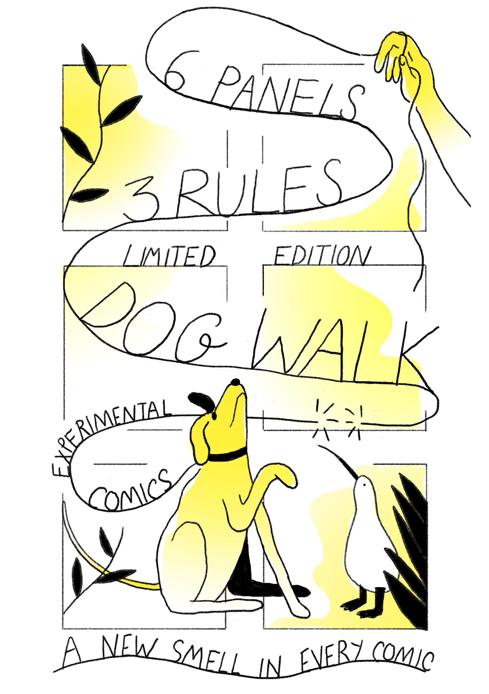
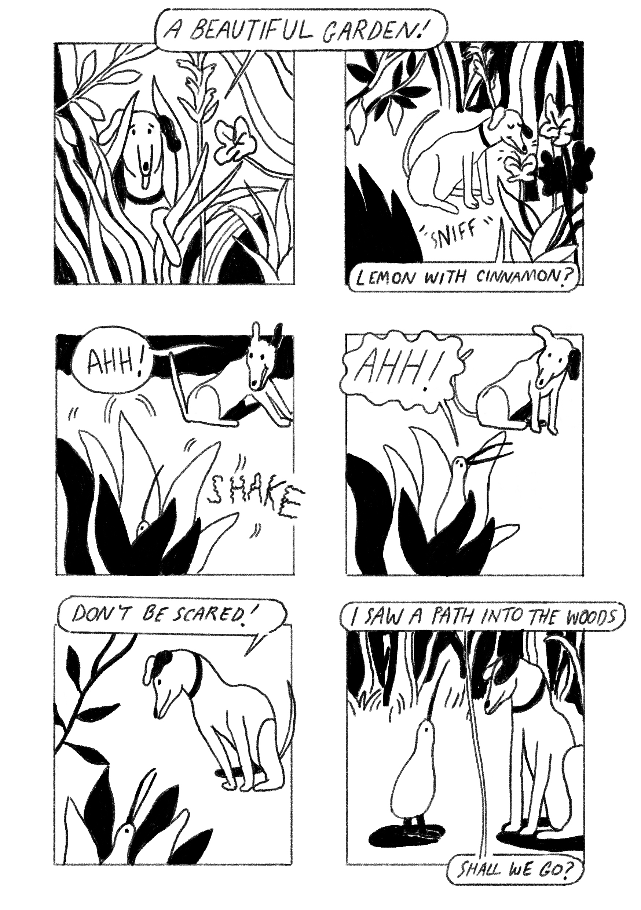

Dog Walk is a collaborative experiment into narrative comics, storytelling and structured remixes.
Over six panels, a dog goes for a walk, makes a positive observation, meets a kiwi bird, and experiences a new and interesting smell. The final panel ends with a cliffhanger.
Artists were invited to contribute their own version of the story following these rules.

